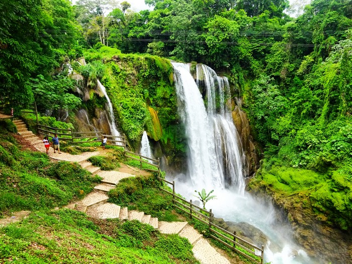

La Fortaleza de
San Fernando de Omoa.
Ubicada en la localidad de Omoa correspon-
de posiblemente a la estructura de defensa
colonial más importante de toda Centroa-
mérica, una enorme construcción en piedra
terminada en 1775 con el fin de proteger el
norte de Honduras de corsarios y piratas.

La Reserva de la Biosfera de
Río Plátano
Enorme reserva natural declarada Patrimo-
nio de la Humanidad por la UNESCO, com-
prendiendo un territorio montañoso que
desciende en pendiente hasta la costa cari-
beña, siendo guardiana de uno de los últi-
mos vestigios de bosque lluvioso tropical de
Centroamérica.
Ruinas de Copán.
Uno de los lugares turísticos de Honduras
más fascinantes, antigua capital de un reino
maya que prosperó entre los siglos V al IX.
Hoy sus ruinas declaradas Patrimonio de la
Humanidad por la UNESCO, permiten retro-
ceder en el tiempo, permitiendo apreciar lo
que fue su esplendor a través de palacios.
Islas de la Bahía.
Sin duda uno de los más paradisiacos luga-
res turísticos de Honduras, un archipiélago
caribeño rodeado de aguas tibias y cristali-
nas, donde sumergirse en verdaderos tapi-
ces de corales y una extraordinaria biodiver-
sidad marina.

Cataratas Pulhapanzak.
Otro de los lugares históricos de Honduras
son las Cataratas de Pulhapanzak pues en
ellas se encuentran los vestigios arqueológi-
cos del período clásico tardío. La ubicas jus-
tamente sobre el río Lindo al lado norte del
Lago de Yojoa y tiene unos 43 metros de
altura.

La Ceiba.
Situada prácticamente al frente de Cayos
Cochinos, corresponde a la tercera ciudad
más grande de Honduras, conocida por su li-
toral norte donde se extienden hermosas
playas que dan al Mar Caribe.

Tela.
Pequeña ciudad puerto considerado uno de
los balnearios costeros principales del
Caribe Hondureño, hogar de playas de en-
sueño y una desarrollada infraestructura tu-
rística característica por sus hoteles de Lujo.

Los Cayos Cochinos.
Otro grupo de islas que destacan por sus es-
cenarios caribeños, conformados por dos
pequeñas islas principales: Cayo Menor y
Cayo Mayor, y 13 cayos más pequeños de
origen coralino.
Lago de Yojoa.
Situada prácticamente al frente de Cayos
Cochinos, corresponde a la tercera ciudad
más grande de Honduras, conocida por su li-
toral norte donde se extienden hermosas
playas que dan al Mar Caribe.
Útila.
Otro de los lugares de obligada visita y uno
de los más turísticos del país. A dos horas de
Roatán se encuentra esta maravilla caribeña
perfecta para el buceo.
Una isla en la que disfrutar de bellos arreci-
fes, pero también de las famosas excursio-
nes para ver al pez más grande del mundo
El Parque de Pico Bonito.
Si te gusta la naturaleza, llegar a Pico Bonito
supondrá alcanzar uno de los lugares del
planeta con más biodiversidad del mundo.
Desde selvas a bosques, el parque natural
hondureño ofrece vistas, paisajes y especies
únicas en el mundo.

Cuevas de Talgua.
Misterioso sitio arqueológico ubicado en la
Sierra de Agalta, lugar donde se encontraron
cientos de osamentas humanas y restos de
vasijas escondidas entre las formaciones ro-
cosas de una cueva, datadas de aproximada-
mente el año 1.000 a. C.
Tegucigalpa.
¿Cómo visitar un país y no conocer su capi-
tal? Se trata de algo impensable, especial-
mente cuando en dicha ciudad suelen estar
los aeropuertos en los que se hace la llega-
da.
Gracias.
Gracias es el agraciado nombre de la que se
considera como una de las ciudades más bo-
nitas del país. Capital del imperio español en
Centroamérica hoy es una ciudad colonial
totalmente rehabilitada que merece la pena
ser visitada.

Puerto Cortés.
Uno de los lugares en Honduras más gran-
des y emblemáticos de América Central es el
Puerto Cortés. Está ubicado específicamente
en la ciudad del mismo nombre y es uno de
los puertos más seguros de acuerdo a la cer-
tificación realizada por las autoridades nor-
teamericanas.
Playa West Bay.
Uno de los destinos para viajar a Honduras
es la playa West Bay en la isla Roatán, perte-
neciente al archipiélago de las Islas de la
Bahía. Es una de las playas más tranquilas
que conseguirás en territorio hondureño ca-
racterizada por su exuberante vegetación y
bellos paisajes.

Parque Nacional Cusuco.
Si te gusta la naturaleza, llegar a Pico Bonito
supondrá alcanzar uno de los lugares del
planeta con más biodiversidad del mundo.
Desde selvas a bosques, el parque natural
hondureño ofrece vistas, paisajes y especies
únicas en el mundo.

La Campa.
En la cabecera del Municipio La Campa en el
departamento de Lempira consigues un
pueblito llamado La Campa justo al lado su-
deste del Parque Nacional de Celaque, se
convierte en uno de los atractivos culturales
de Honduras que no te puedes perder.